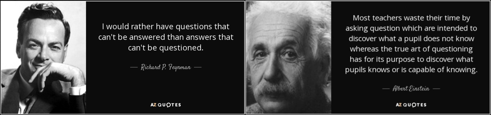

Research Interests

The increasing complexity of modern computing systems is driven by the convergence of
Artificial Intelligence, large-scale software infrastructures, cloud computing, and
cyber-physical technologies. My research vision is to develop the scientific
foundations and engineering methodologies required to build the next generation of
trustworthy AI-enabled software systems.
My research lies at the intersection of Computer Science, Artificial Intelligence,
Software Engineering, Machine Learning, Data Science, and Cyber-Physical Systems.
I investigate how AI can transform the way software systems are designed, developed,
tested, maintained, evolved, and operated, while also studying how software engineering
principles can enable the creation of reliable, secure, and trustworthy AI systems.
A central objective of my research is to address the challenges arising from the
development of intelligent and autonomous systems, where software, data, AI models,
and physical components interact continuously. This includes autonomous cyber-physical
systems, robotics, drones, smart infrastructures, cloud-based intelligent services,
and AI-enabled applications in domains such as healthcare and life sciences.
Through collaborations with academic and industrial partners, my research develops
AI-driven methods, tools, and platforms that address fundamental scientific questions
while solving real-world challenges. My work has been supported by several competitive
national and international research programmes, including SNSF, Innosuisse, Hasler
Foundation, Horizon Europe, and strategic European initiatives.
More information about ongoing and past projects:
projects
Selected publications:
[B1, B2, B3, J35, J34, J33, J32, J31, J30, J29, J28, J27, J24, J23,
C70, C69, C68, C67, C66, C64, C62, C61, C60, C59, C58, C57, C56, C55, ...]
Artificial Intelligence is fundamentally changing the way software systems are
created and maintained. My research explores the synergy between
Artificial Intelligence, Machine Learning, Generative AI, and Software Engineering
to develop intelligent solutions that support software developers and improve the
quality, reliability, and sustainability of software systems.
My work investigates AI-based approaches for software development and maintenance,
including automated testing, defect prediction, software evolution, code analysis,
requirements engineering, developer assistance, and intelligent recommendation
systems.
A major research direction focuses on the use of
Large Language Models (LLMs) and Generative AI for Software Engineering,
including AI-assisted programming, automated code generation, intelligent software
agents, vulnerability analysis, and AI-supported testing.
In parallel, I investigate how Software Engineering methodologies can contribute to
the development of trustworthy AI systems by addressing challenges related to
quality assurance, reliability, transparency, reproducibility, security, and
responsible AI.
Current research directions include trustworthy Generative AI, AI agents for
software engineering, evaluation methodologies for AI-generated code, explainable
AI, responsible AI, and engineering methodologies for AI-intensive systems.
Selected publications:
[J36, J35, J34, J33, J32, J31, J30, J29, J28, J27, J24, J23,
C72, C70, C69, C68, C67, C66, C64, C62, C61, C60, C59, C58,
C57, C55, C54, C51, ...]
Cyber-Physical Systems (CPSs) and Autonomous Cyber-Physical Systems (ACPSs) represent
one of the most challenging frontiers of Computer Science, combining software,
Artificial Intelligence, sensors, networks, and physical environments.
My research investigates methods for developing, testing, verifying, and operating
trustworthy autonomous systems, with particular emphasis on drones, robotics,
smart mobility, industrial systems, and AI-enabled infrastructures.
Through projects such as COSMOS, ARIES, InnoGuard, Aerialist, Safe-2-Fly, SwarmOps,
and BioAI4LCMS, I investigate how DevOps, MLOps, AI, automated testing, verification,
and data-driven approaches can be integrated to support the development of safe,
adaptive, and dependable autonomous systems.
Selected publications:
[B1, B2, B3, J35, J34, J33, J32, J31, J29, J28, J27, J24, J23,
C71, C70, C69, C68, C67, C66, C64, C63, C62, C61, C60, C59,
C58, C57, C55, ...]
The rapid adoption of AI-driven applications introduces new challenges concerning
the development, deployment, monitoring, and evolution of intelligent systems.
My research investigates methodologies and tools for managing the lifecycle of
software systems that incorporate AI and data-driven components.
A particular focus is placed on the convergence between
DevOps, MLOps, Cloud Computing, and Artificial Intelligence, including automated
pipelines for AI systems, continuous training and deployment of machine learning
models, monitoring of intelligent services, and reliability engineering for
large-scale software infrastructures.
My research explores how traditional software engineering practices can evolve to
support modern AI-intensive systems, addressing challenges such as data and model
drift, reproducibility, scalability, security, compliance, and trustworthy operation.
Selected publications:
[J34, J33, J32, J31, J30, J29, J27, J23,
C71, C70, C69, C68, C67, C66, C64, C63, C62,
C61, C60, C59, C58, C57, C55, ...]
A fundamental component of my research is the use of empirical methodologies and
data-driven techniques to understand and improve software development practices.
By mining large-scale software repositories, analyzing developer activities, and
applying Artificial Intelligence and Data Science techniques, my research provides
evidence-based solutions for improving software quality and developer productivity.
Previous and ongoing research directions include software repository mining,
natural language processing for software artifacts, developer collaboration analysis,
software quality prediction, automated recommendation systems, and empirical
investigations of modern software development practices.
More recently, this research direction has expanded toward understanding the impact
of AI-assisted software development and Generative AI tools on developers, software
quality, and engineering processes.
Selected publications:
[J38, J36, J22, J21, J20, J19, J18, J17, J16, J15, J14,
J13, J12, J11, J8, J7, J5,
C54, C51, C48, C47, C46, C45, C43, C42, C41, C38,
C37, C36, C35, C34, C30, C29, C28, ...]